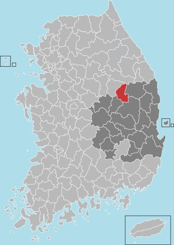
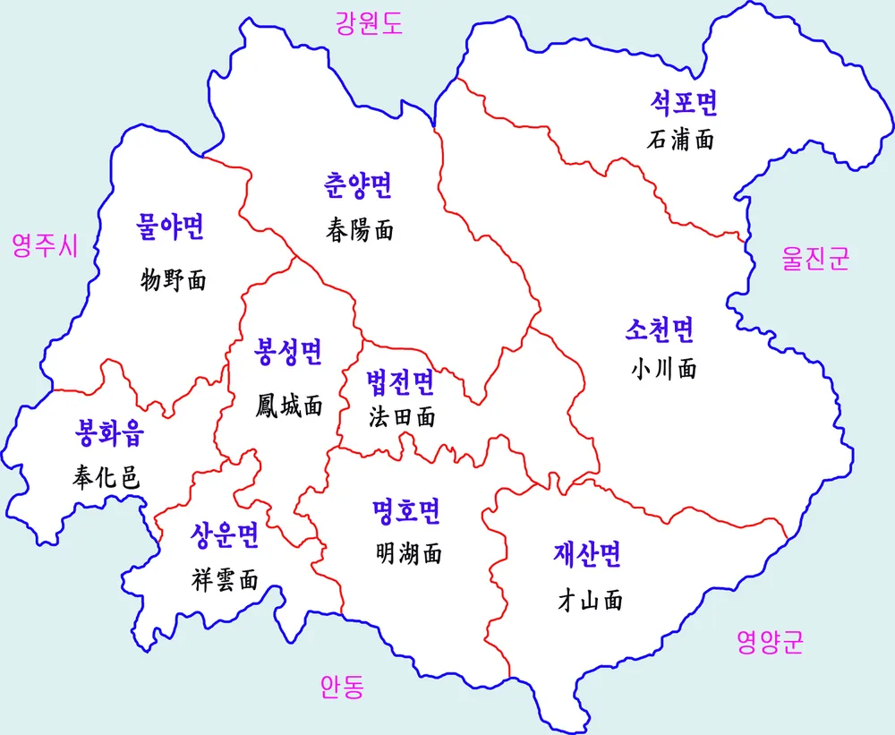

경상북도 북부에 있는 군. 인구는 28,588명 ㅋㅋㅋㅋㅋ
북쪽에 강원특별자치도 영월군, 태백시, 삼척시가 있으며 동쪽에 울진군, 남쪽에 안동시와 영양군, 서쪽에 영주시가 있다.
경북 북부 중에서도 가장 낙후된 편으로, 2020~2021년 인구과소지역비율 전국 1위를 달성했는데, 관내 절반 정도가 인구과소지역에
해당되며 재정자립도 전국 하위 10%에 들어갈 정도로 지역경제 역시 상당히 취약하다. 2016년 및 2021년에는 전국 지자체 간 재정자립도에서 명실상부 꼴찌를 맡기까지 했다. 소멸위험지수 또한
2024년 기준 군위군 다음으로 낮은 동네이다.